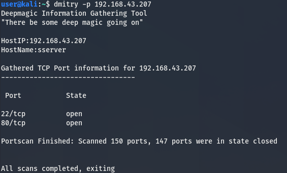

Dmitry
usage : dmitry [-winsepfb] [-t 0-9] [-o %host.txt] host -o save output to %host.txt or specified file -i perform a whois lookup on the IP address of a host -w perform a whois lookup on the IP domain of a host -n retrieve netcraft.com information on a host -s perform a search for possible subdomains -e perform a search for possible email address -p perform a TCP port scan on a host *-f perform a TCP port scan on a host showing output reporting filtered ports *-b read in the banner received from the scanned port *-t 0-9 set the TTL in seconds when scanning a TCP port(default 2) *Requires the -p flagged to be passed
dmitry -i 192.168.43.1dmitry -i 192.168.43.1 -o tampung.txtdmitry -wnpe -o hsploit.com resultsdmitry -w zonetransfer.medmitry -p 192.168.43.1
DNS Enumeration
- Host
Usage: host [-aCdilrTvVw] [-c class] [-N ndots] [-t type] [-W time]
[-R number] [-m flag] hostname [server]
-a is equivalent to -v -t ANY
-A is like -a but omits RRSIG, NSEC, NSEC3
-c specifies query class for non-IN data
-C compares SOA records on authoritative nameservers
-d is equivalent to -v
-l lists all hosts in a domain, using AXFR
-m set memory debugging flag (trace|record|usage)
-N changes the number of dots allowed before root lookup is done
-r disables recursive processing
-R specifies number of retries for UDP packets
-s a SERVFAIL response should stop query
-t specifies the query type
-T enables TCP/IP mode
-U enables UDP mode
-v enables verbose output
-V print version number and exit
-w specifies to wait forever for a reply
-W specifies how long to wait for a reply
-4 use IPv4 query transport only
-6 use IPv6 query transport only
host 192.168.43.1host -t ns 192.168.43.1host -t mx 192.168.43.1nslookup 192.168.43.1nslookup
set type=ns
192.168.43.1
set type=mx
192.168.43.1
Usage: dig [@global-server] [domain] [q-type] [q-class] {q-opt}
{global-d-opt} host [@local-server] {local-d-opt}
[ host [@local-server] {local-d-opt} [...]]
Where: domain is in the Domain Name System
q-class is one of (in,hs,ch,...) [default: in]
q-type is one of (a,any,mx,ns,soa,hinfo,axfr,txt,...) [default:a]
(Use ixfr=version for type ixfr)
q-opt is one of:
-4 (use IPv4 query transport only)
-6 (use IPv6 query transport only)
-b address[#port] (bind to source address/port)
-c class (specify query class)
-f filename (batch mode)
-k keyfile (specify tsig key file)
-m (enable memory usage debugging)
-p port (specify port number)
-q name (specify query name)
-r (do not read ~/.digrc)
-t type (specify query type)
-u (display times in usec instead of msec)
-x dot-notation (shortcut for reverse lookups)
-y [hmac:]name:key (specify named base64 tsig key)
d-opt is of the form +keyword[=value], where keyword is:
+[no]aaflag (Set AA flag in query (+[no]aaflag))
+[no]aaonly (Set AA flag in query (+[no]aaflag))
+[no]additional (Control display of additional section)
+[no]adflag (Set AD flag in query (default on))
+[no]all (Set or clear all display flags)
+[no]answer (Control display of answer section)
+[no]authority (Control display of authority section)
+[no]badcookie (Retry BADCOOKIE responses)
+[no]besteffort (Try to parse even illegal messages)
+bufsize=### (Set EDNS0 Max UDP packet size)
+[no]cdflag (Set checking disabled flag in query)
+[no]class (Control display of class in records)
+[no]cmd (Control display of command line -
global option)
+[no]comments (Control display of packet header
and section name comments)
+[no]cookie (Add a COOKIE option to the request)
+[no]crypto (Control display of cryptographic
fields in records)
+[no]defname (Use search list (+[no]search))
+[no]dnssec (Request DNSSEC records)
+domain=### (Set default domainname)
+[no]dscp[=###] (Set the DSCP value to ### [0..63])
+[no]edns[=###] (Set EDNS version) [0]
+ednsflags=### (Set EDNS flag bits)
+[no]ednsnegotiation (Set EDNS version negotiation)
+ednsopt=###[:value] (Send specified EDNS option)
+noednsopt (Clear list of +ednsopt options)
+[no]expandaaaa (Expand AAAA records)
+[no]expire (Request time to expire)
+[no]fail (Don't try next server on SERVFAIL)
+[no]header-only (Send query without a question section)
+[no]identify (ID responders in short answers)
+[no]idnin (Parse IDN names [default=on on tty])
+[no]idnout (Convert IDN response [default=on on tty])
+[no]ignore (Don't revert to TCP for TC responses.)
+[no]keepalive (Request EDNS TCP keepalive)
+[no]keepopen (Keep the TCP socket open between queries)
+[no]mapped (Allow mapped IPv4 over IPv6)
+[no]multiline (Print records in an expanded format)
+ndots=### (Set search NDOTS value)
+[no]nsid (Request Name Server ID)
+[no]nssearch (Search all authoritative nameservers)
+[no]onesoa (AXFR prints only one soa record)
+[no]opcode=### (Set the opcode of the request)
+padding=### (Set padding block size [0])
+[no]qr (Print question before sending)
+[no]question (Control display of question section)
+[no]raflag (Set RA flag in query (+[no]raflag))
+[no]rdflag (Recursive mode (+[no]recurse))
+[no]recurse (Recursive mode (+[no]rdflag))
+retry=### (Set number of UDP retries) [2]
+[no]rrcomments (Control display of per-record comments)
+[no]search (Set whether to use searchlist)
+[no]short (Display nothing except short
form of answers - global option)
+[no]showsearch (Search with intermediate results)
+[no]split=## (Split hex/base64 fields into chunks)
+[no]stats (Control display of statistics)
+subnet=addr (Set edns-client-subnet option)
+[no]tcflag (Set TC flag in query (+[no]tcflag))
+[no]tcp (TCP mode (+[no]vc))
+timeout=### (Set query timeout) [5]
+[no]trace (Trace delegation down from root [+dnssec])
+tries=### (Set number of UDP attempts) [3]
+[no]ttlid (Control display of ttls in records)
+[no]ttlunits (Display TTLs in human-readable units)
+[no]unexpected (Print replies from unexpected sources
default=off)
+[no]unknownformat (Print RDATA in RFC 3597 "unknown" format)
+[no]vc (TCP mode (+[no]tcp))
+[no]yaml (Present the results as YAML)
+[no]zflag (Set Z flag in query)
global d-opts and servers (before host name) affect all queries.
local d-opts and servers (after host name) affect only that lookup.
-h (print help and exit)
-v (print version and exit)
dig 192.168.43.1dig 192.168.43.1 -t mxdig 192.168.43.1 -t nsdig 192.168.43.1 -t AAAAdig 192.168.43.1 -t mx +shortdig 192.168.43.1 CNAME +shortfor ip in 'dig 192.168.43.1 +short';do nmap $ip; donePort :
netstat -tulpnnetstat -tulpn | grep LISTENnetstat --listennetstat -vaunnetstat -vatnsudo ss -tulwn | grep LISTENufw allow 80ufw allow sshufw deny sshufw reloadufw enableufw disablelsof -i :22nmap -p- 127.0.0.1misal tutup port tcp 40217
fuser -k -n tcp 40217-n : process id